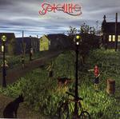

| Artist: | Satellite |
| Title: | Evening Games |
| Label: | Metal Mind Productions MMP CD 0297 |
| Length(s): | minutes |
| Year(s) of release: | 2004 |
| Month of review: | [09/2005] |
| 1) | Evening Games | 16.45 |
| 2) | Never Never | 7.02 |
| 3) | Rush | 5.47 |
| 4) | Love Is Around You | 5.39 |
| 5) | Why | 6.59 |
| 6) | Beautiful World | 9.05 |
| 7) | Evening Overture | 10.38 |
| 8) | Take It As It Is | 2.49 |
Never Never begins a string of average length tunes. This one opens very percussively and bombastically. The music could well be used for say the soundtrack to the Lion King. The guitar sound is typically Collage and of course Amirian is enhances the Collage connection. This could well be a song from Moonshine. The chorus is quite loud with Amirian shouting out the title. Then the music dies down somewhat, to come back accompanied with synth strings. The guitar is high-pitched as usual, leaning a sense of urgency. These constituents are alternated until the end of the song.
Rush opens melodically with guitar and dancing piano. But right after, we get some violent programmed drums and choral effects. The voice of Amirian is vocoded to sound quite mean, but he has his softer parts as well. Still, this is a rather noisy and, for Satellite, inaccessible piece with plenty of noises and effects all vying for attention. There is space for breathers though in which the music has classical sounding aspects.
Love Is Around You sounds like we might get a ballad here after the upheaval of the previous song. Still, it is not as sweet at first, the vocals are in the lower regions of Amirian's, not his strongest. The chorus is dreamy, and somewhat higher than that. The overall mood is one of relaxing with the string synths in the back for occasional support. At the end, the electric guitar gets it solo spot.
Why is back to the crunchy rhythm guitar, marimba like play on the synths and the usual synthy violins. There is something of Oldfield in the melody here, as well as in the guitar sound. However, the rhythm guitar does give the music a temporary progmetal feel. However, this element enriches the usual Satellite/Collage sound by adding a sense of danger/urgency and the like to the music that would otherwise be a bit too melodic, too sweet. The middle part has an engaging passage filled with keyboard bombast and pounding drums, and overall a rather bombastic second half with the usual classically styled influences.
Beautiful World is a relatively long track, with a strong ballad like feel. The song is comparatively laid back and mellow with an accessible chorus. Sometimes I get the impression that Amirian falls a bit short here. The second half is notably rockier and modern, but also markedly less melodic, more meandering.
Evening Overture is maybe a bit strange in that we find it almost at the end of the album. It opens classically enough, quite bombastically even. The classicalness does not prevent the electric guitar from demanding and obtaining a leading role. Melodically this is strong material with the music building and building. The vocal parts that follow have good melodies, but after the bombastic beginning some of these parts are a bit of a let down, a sinking in. This is something I often notice: that the bombast of an introduction drops out when we move to the vocal parts and at that point the vocal melody must be very distinctive to survive the transition, in the sense that it equals the appeal of the previous part. In all honesty, this is one of the better tracks where melody is concerned (take the piano part in second half and the accompaniment on guitar).
Take It As It Is is the rather lighthearted and melodic closer to the album. It is mainly Amirian who has the lead here.